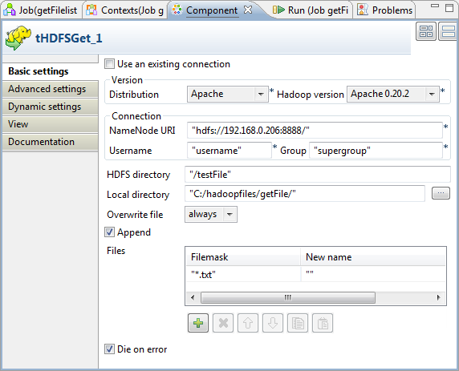

Avertissement
Ce composant est disponible dans la Palette de votre studio si vous avez souscrit à l'édition correspondante de Talend Big Data Studio.
|
Famille de composant |
Big Data/Hadoop | |
|
Fonction |
tHDFSGet extrait des données du système de fichiers Hadoop. | |
|
Objectif |
tHDFSGet se connecte au système de fichiers distribués Hadoop, permet d’obtenir de gros fichiers avec une performance optimisée. | |
|
Basic settings |
Use an existing connection |
Cochez cette case et, dans la liste Component List, cliquez sur le composant HDFS de connexion duquel vous souhaitez réutiliser les informations de connexion précédemment définies. NoteLorsqu’un Job contient un Job parent et un Job enfant, la liste Component list présente uniquement les composants de connexion du Job du même niveau. |
|
Version |
Distribution |
Sélectionnez dans la liste déroulante le produit que vous utilisez comme distribution d'Hadoop. Les options de la liste varient selon le composant que vous utilisez. |
| Hadoop version |
Sélectionnez la version de la distribution d'Hadoop que vous utilisez. | |
|
Connection |
NameNode URI |
Saisissez l'URI du NameNode Hadoop. |
|
|
User name |
Nom d'utilisateur de HDFS. |
|
|
Group |
Identifiant de l’utilisateur et nom du groupe sous lesquels les instances HDFS ont été lancées. Ce champ peut être disponible ou indisponible selon la distribution que vous utilisez. |
|
|
Use kerberos authentication |
Si vous accédez au cluster Hadoop fonctionnant avec la sécurité de Kerberos, cochez cette case, puis saisissez le "principal name" de Kerberos pour le NameNode dans le champ affiché. Cela vous permet d'utiliser votre identifiant pour vous authentifier, en le comparant aux identifiants stockés dans Kerberos. Cette case est disponible ou indisponible selon la distribution d'Hadoop à laquelle vous vous connectez. |
|
|
HDFS directory |
Parcourez votre système ou saisissez le chemin d'accès au répertoire de HDFS dans lequel sont stockées les données à utiliser. |
|
|
Local directory |
Dossier local où stocker les fichiers obtenus via HDFS. |
|
|
Overwrite file |
Option permettant d’écraser ou non les fichiers avec le nouveau fichier. |
|
|
Append |
Cochez cette case pour ajouter des nouvelles lignes à la fin du fichier. |
|
|
Files |
Dans la zone Files, les champs à remplir sont : - File mask : saisissez le nom du fichier qui sera sélectionné dans HDFS. Vous pouvez utiliser des expressions régulières. - New name : renommez le fichier obtenu. |
|
|
Die on error |
La case est cochée par défaut. Décochez la case afin d’ignorer la ligne d’erreur et finir le processus de lignes sans erreur. |
|
|
tStatCatcher Statistics |
Cochez cette case pour collecter les données de log au niveau du composant. |
|
Dynamic settings |
Cliquez sur le bouton [+] pour ajouter une ligne à la table. Dans le champ Code, saisissez une variable de contexte afin de sélectionner dynamiquement votre connexion HDFS parmi celles prévues dans votre Job. Cette fonctionnalité est utile si vous devez accéder à des fichiers dans différents systèmes HDFS ou dans différentes distributions, en particulier lorsque vous travaillez dans un environnement dans lequel vous ne pouvez pas changer les paramètres de votre Job, par exemple lorsque votre Job doit être déployé et exécuté dans un Studio Talend indépendant. La table Dynamic settings n'est disponible que si la case Use an existing connection est cochée dans la vue Basic settings. Lorsqu'un paramètre dynamique est configuré, la liste Component List devient inaccessible dans la vue Basic settings. Pour plus d'informations concernant les Dynamic settings et les variables de contexte, consultez le Guide utilisateur Talend Data Integration Studio. | |
|
Utilisation |
Ce composant combine la connexion HDFS et l’extraction de données, ainsi il est utilisé comme un simple composant sous-job ou pour préparer les données afin d’alimenter le flux d’entrée d’un Job. Il est souvent connecté au Job utilisant les liens OnSubjobOk ou OnComponentOk, en fonction du contexte. | |
|
Prérequis |
La distribution Hadoop doit être correctement installée afin de garantir les interactions avec le studio. Par exemple, si vous devez vous connecter à MapR à partir du studio, assurez-vous d'avoir
installé le client MapR sur la même machine que le studio et d'avoir ajouté la bibliothèque
client de MapR dans la variable PATH de cette machine. Pour Windows, la bibliothèque est
lib\MapRClient.dll dans le fichier Jar du client MapR
; si vous ne l'ajoutez pas, il est possible que vous rencontriez l'erreur suivante :
Pour plus d'informations concernant l'installation d'une distribution Hadoop, consultez le manuel correspondant à la distribution Hadoop que vous utilisez. | |
|
Limitations |
La version 1.6+ de JRE est requise pour exécuter le composant. | |
Le scénario suivant décrit un simple Job qui crée un fichier dans un dossier défini, dans ou en dehors d’HDFS, l’enregistre dans un autre dossier local et le lit à la fin de l’exécution du Job.
Glissez les composants suivants de la Palette vers l’espace de modélisation : tFixedFlowInput, tFileOutputDelimited, tHDFSPut, tHDFSGet, tFileInputDelimited et tLogRow.
Connectez le tFixedFlowInput au tFileOutputDelimited à l'aide d'un lien Row > Main.
De la même façon, cliquez-droit sur le composant tFileInputDelimited pour le relier au tLogRow, en utilisant le lien Row Main.
A nouveau, cliquez-droit sur le composant tFixedFlowInput pour le relier au composant tHDFSPut en utilisant le lien OnSubjobOk.
Reliez le tHDFSPut au tHDFSGet à l'aide d'un lien OnSubjobOk.
Reliez le composant tHDFSGet au tFileInputDelimited à l’aide d’un lien OnSubjobOk.

Dans l’espace de modélisation, double-cliquez sur le composant tFixedFlowInput pour définir ses Basic settings.
Dans la liste Schema, sélectionnez Built-In et cliquez sur le bouton [...] situé à côté d’Edit Schema afin d’afficher la structure des données que vous souhaitez créer à partir des variables internes. Dans ce scénario, le schéma contient une colonne : content.

Cliquez sur le bouton [+] pour ajouter une ligne de paramètres.
Cliquez sur OK pour fermer la boîte de dialogue et accepter la propagation des modifications.
Dans l’onglet Basic settings, dans la zone Mode, définissez la valeur de la colonne, en utilisant l’option Use Single Table. Dans ce scénario, la valeur est “Hello world!”.

Dans l’espace de modélisation, sélectionnez le composant tFileOutputDelimited et cliquez sur l’onglet Component afin de définir sa configuration de base (Basic settings).

Cliquez sur le bouton [...] situé à côté du champ File Name et parcourez votre répertoire jusqu’au fichier de sortie dans lequel vous souhaitez écrire des données, in.txt dans cet exemple.
Dans l’espace de modélisation, sélectionnez le composant tHDFSPut et cliquez sur l’onglet Component pour définir ses Basic settings.

Sélectionnez Apache 0.20.2 dans la liste Hadoop version.
Dans les champs Host, Port, Username et Group, saisissez les informations de connexion à HDFS.
A côté du champ Local directory, cliquez sur le bouton [...] afin de parcourir votre répertoire et sélectionner le fichier à charger dans HDFS. Dans ce scénario, le dossier a été spécifié pendant la configuration du composant tFileOutputDelimited : C:/hadoopfiles/putFile/.
Dans le champ HDFS directory, saisissez l’emplacement défini dans HDFS pour enregistrer le fichier à charger. Dans cet exemple, il s’agit de /testFile.
Cliquez sur le champ Overwrite file pour développer le menu déroulant.
Dans le menu, sélectionnez always (toujours).
Dans la zone Files, cliquez sur le bouton [+] pour ajouter une ligne dans laquelle vous définissez le fichier à charger.
Dans la colonne File mask, saisissez *.txt entre guillemets pour remplacer newLine, et laissez la colonne New name telle quelle. Ceci vous permet d’extraire tous les fichiers .txt dans le dossier spécifié sans modifier leur nom. Dans cet exemple, le fichier est in.txt.
Dans l’espace de modélisation, sélectionnez le composant tHDFSGet et cliquez sur l’onglet Component pour définir sa configuration de base.
Sélectionnez Apache 0.20.2 dans la liste Hadoop version.
Dans le champ HDFS directory, saisissez l'emplacement de stockage du fichier chargé dans HDFS. Dans cet exemple, il s’agit de /testFile.
A côté du champ Local directory, cliquez sur le bouton [...] pour parcourir jusqu’au dossier spécifié pour l’enregistrement des fichiers extraits d’HDFS. Dans ce scénario, le dossier est : C:/hadoopfiles/getFile/.
Cliquez sur le champ Overwrite file pour développer le menu déroulant.
Dans le menu, sélectionnez always (toujours).
Dans la zone Files, cliquez sur le bouton [+] pour ajouter une ligne dans laquelle vous définissez le fichier à extraire.
Dans la colonne File mask, saisissez *.txt entre guillemets pour remplacer newLine et laissez la colonne New name telle quelle. Ceci vous permet d’extraire tous les fichiers .txt du dossier spécifié dans HDFS sans en modifier les noms. Dans cet exemple, le fichier est in.txt.
Dans l’espace de modélisation, sélectionnez le composant tFileInputDelimited. Cliquez sur l’onglet Component pour définir ses Basic settings.

Dans la liste Property Type, sélectionnez le type Built In.
A côté du champ File Name/Stream, cliquez sur le bouton [...] pour parcourir votre répertoire jusqu’au fichier obtenu de HDFS. Dans ce scénario, le fichier est C:/hadoopfiles/getFile/in.txt.
Dans la liste Schema, sélectionnez Built-In et cliquez sur Edit schema pour définir les données à passer au composant tLogRow.

Cliquez sur le bouton [+] pour ajouter une nouvelle colonne.
Cliquez sur OK pour fermer la boîte de dialogue et accepter la propagation des modifications.